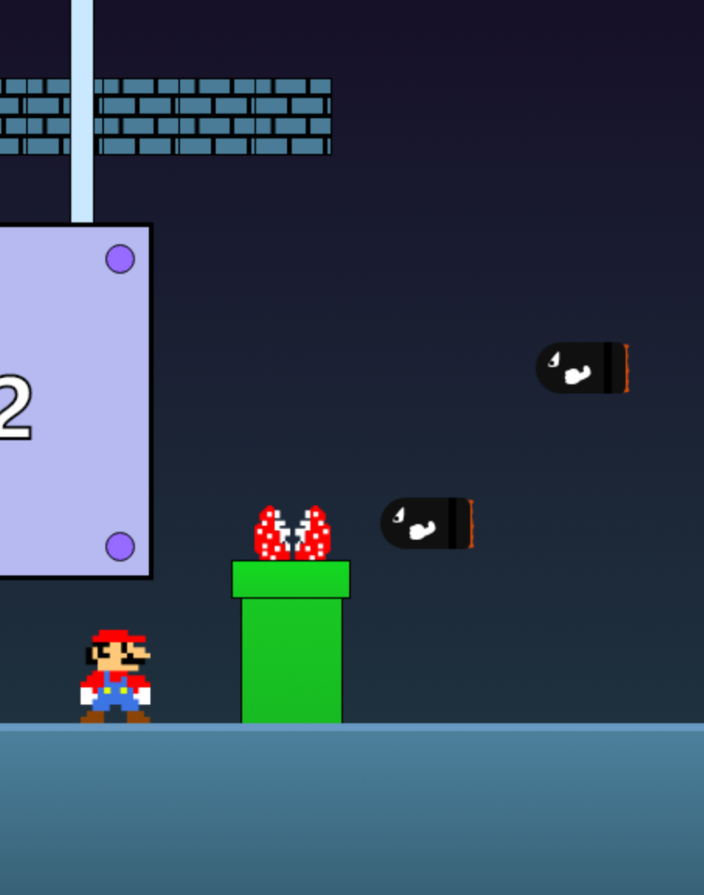
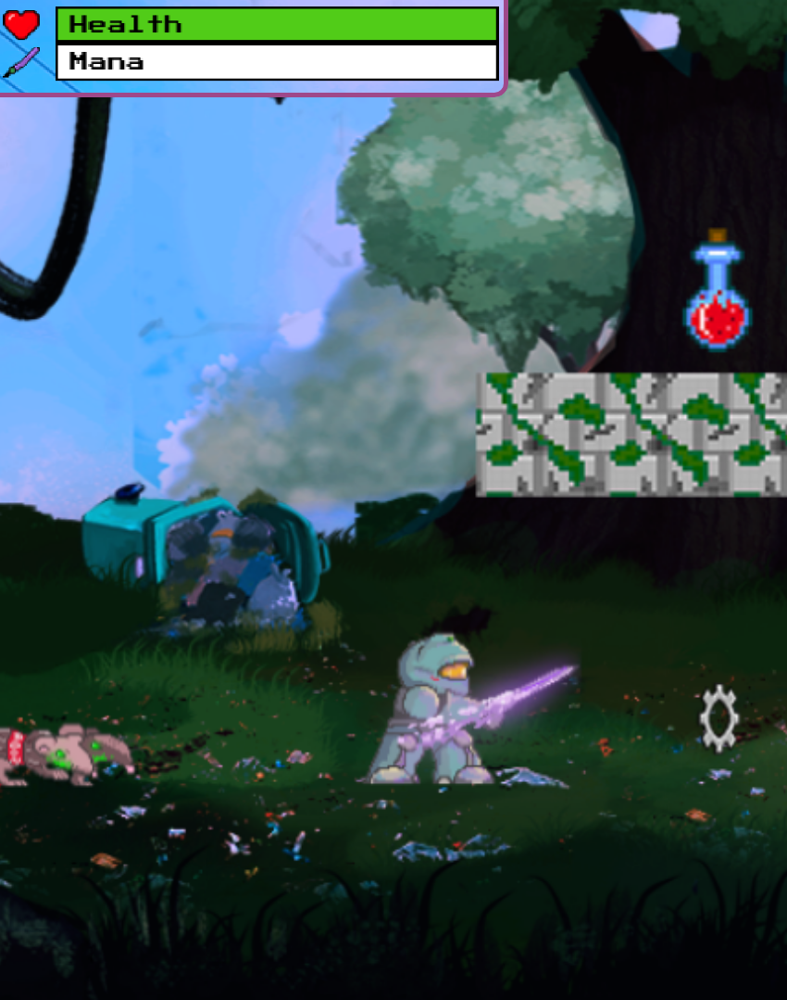
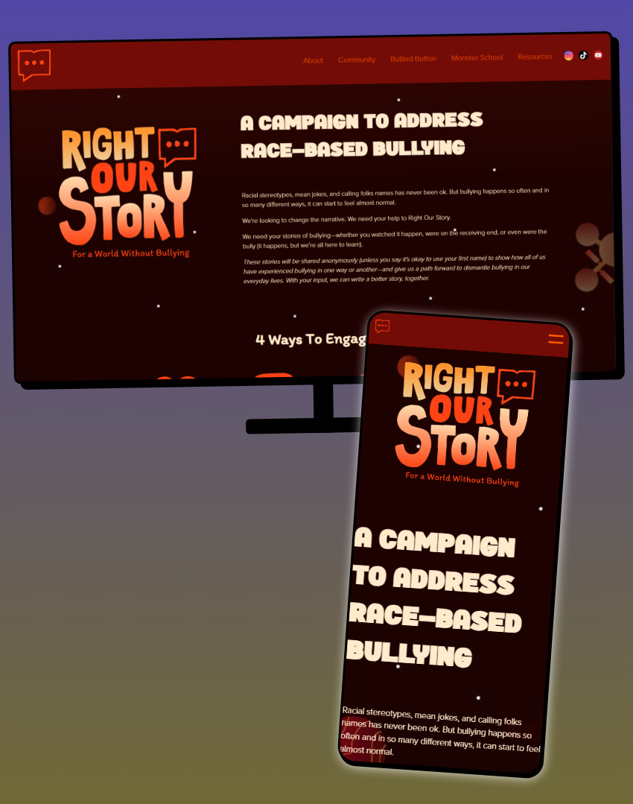
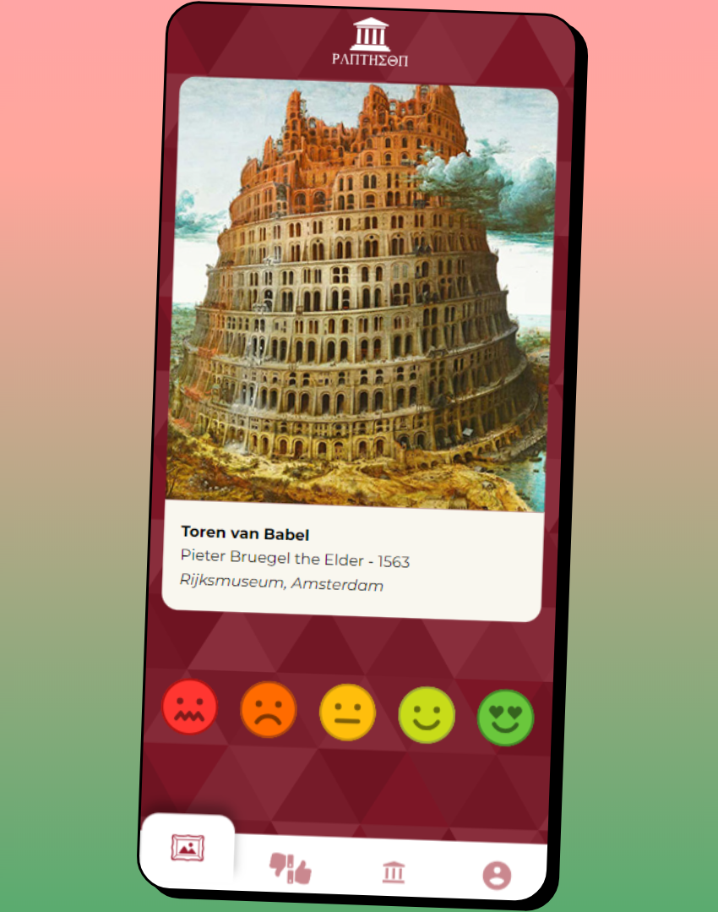
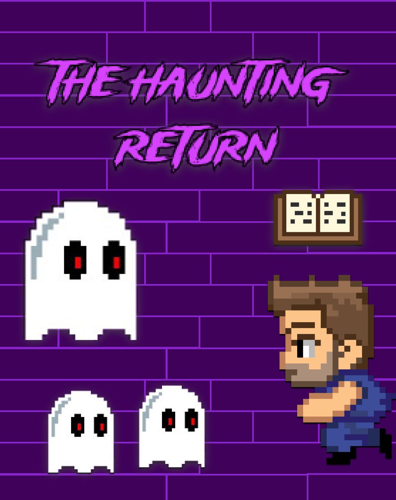
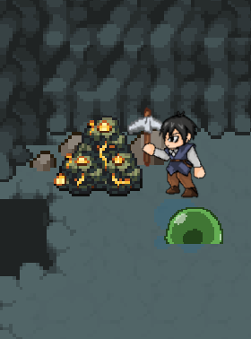
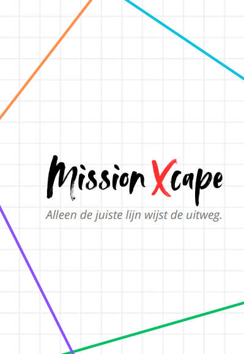
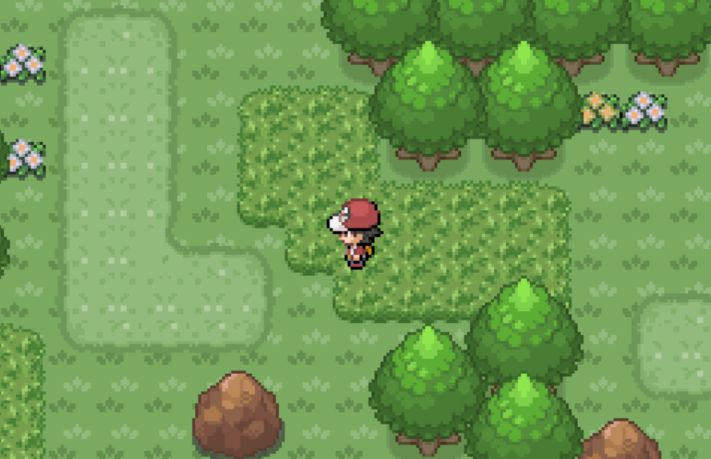
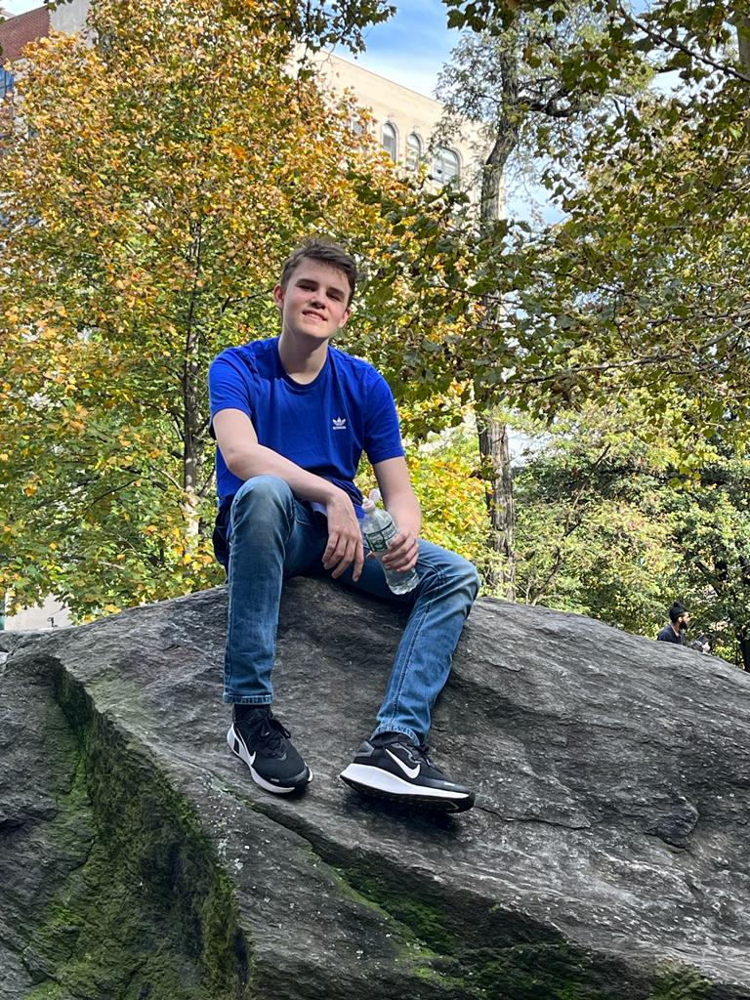

Projecten









Creative Webdesigner
Student CMD (Communication
& Multimedia Design) op
Hogeschool van Amsterdam









Als CMD student maak ik digitale producten die goed aansluiten bij de behoefte van gebruikers. Ik heb een grote passie voor programmeren en coderen die ik hebt ondekt tijdens deze studie. Ik vind het geweldig om een spel, interface of website in te beelden en deze dan na heel veel stappen code te kunnen maken. Niets is een beter gevoel dan met code een functie die eerst niet werkt op te lossen en werkend te maken. In CMD zijn er veel verschillende aspecten waaronder vormgeving, programmeren, gebruikerservaring etc. die allemaal worden aangeleerd gedurende de eerste 2 jaren, waarna je later een eigen richting op kan in de opleiding. Zelf vind ik het programmeren met code en het ontwerpen van nieuwe producten het leukst en ik wil daar graag meer over leren.
Skills
Ervaring
Onderwijs